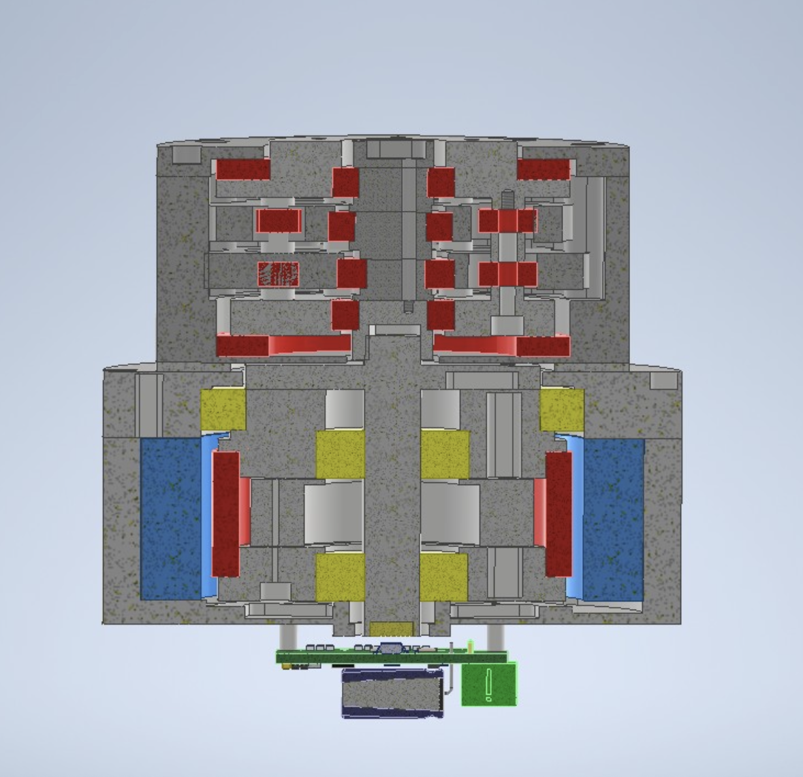
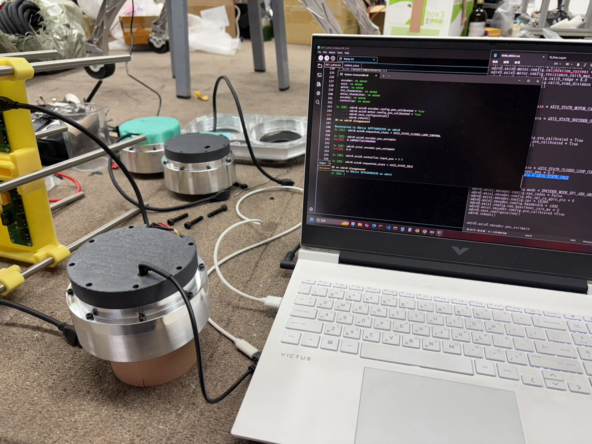
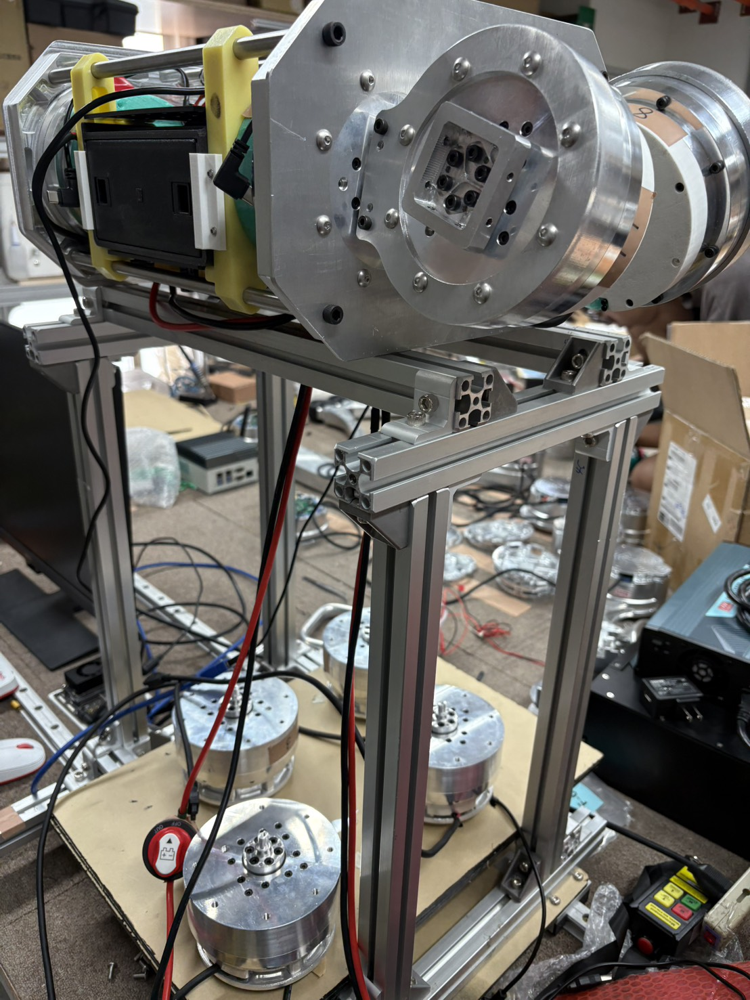
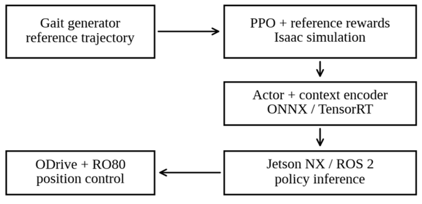
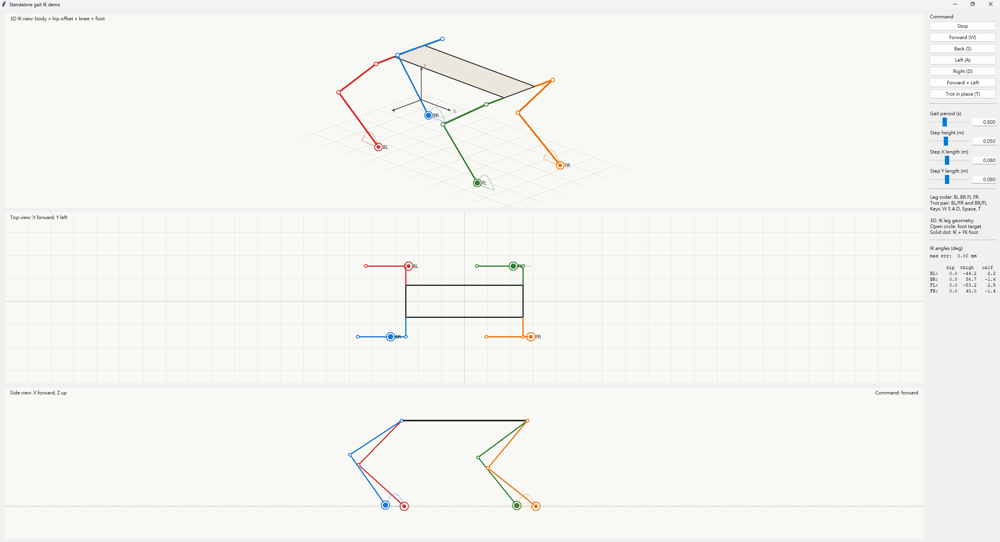
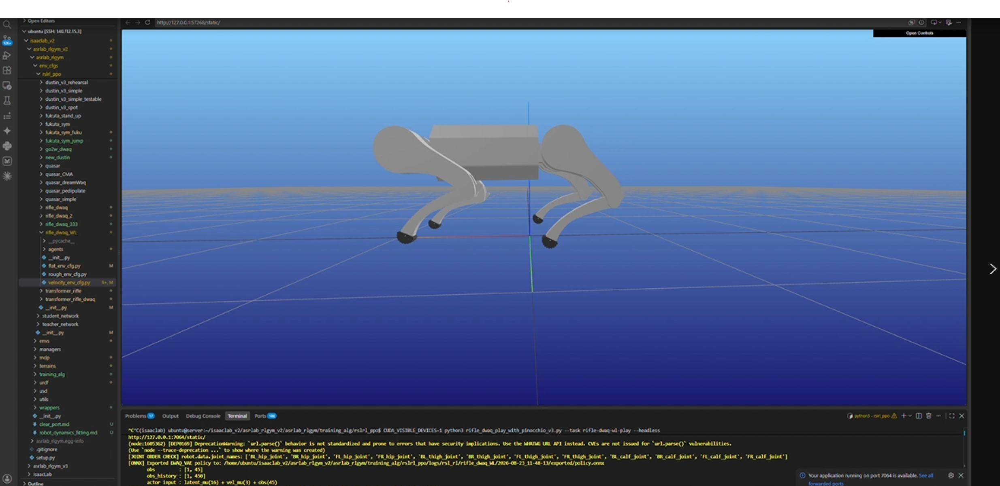
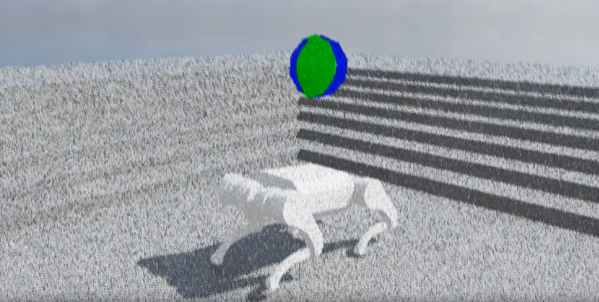
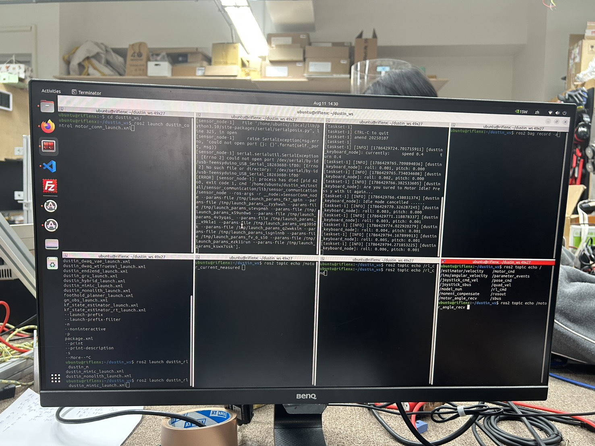
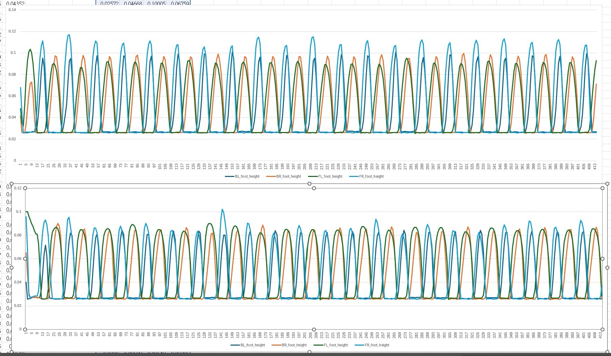
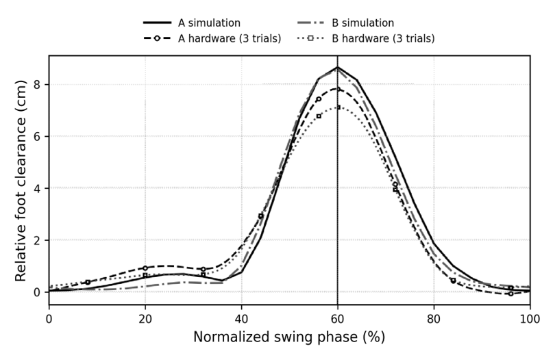

Case Study | Control Systems Laboratory Experience
NTUME ASR Lab
Quadruped research across actuator hardware, embedded motor control, learned locomotion, and physical deployment.
First-Author Publication | CACS 2026
Laboratory experiments became an award-recognized research paper.
I am the first author of our CACS 2026 paper on gait-generator-guided reinforcement learning and sim-to-real performance analysis. I presented the work in person in English; the paper received the Best Student Paper Award — Honorable Mention after selection among 11 finalists.
Click here: Read the research case studyActuator & motor-control integration
Worked on reducer fabrication, motor command/readback, wiring, calibration, and hardware repair. I traced unreliable motion through both the mechanism and the controller before evaluating learned policies.
Design & debugging notes
I treated each motor module as both a mechanism and a measurement device. Rough rotation, high current, encoder drift, or violent initial motion could not be explained from software alone, so I traced failures through reducer assembly, magnet-seat tolerance, ODrive settings, motor ID/communication checks, wiring, and real joint behavior.
My hardware notes include Cubemars RO80 motor testing, current and velocity-limit behavior, encoder and magnet-seat tolerance issues, calf output shaft failures, coaxiality concerns, material choices, and assembly revisions made after physical tests. That record helped turn broken parts and unstable motion into usable design requirements for the next build.



Locomotion training as an experiment
Compared reward design, gait timing, posture, contact, torque, and action smoothness using Isaac Lab training logs, checkpoints, and simulation videos.
Implementation checkpoints
Reward tuning
Compared how clearance, contact, posture, torque, and action-rate terms changed gait behavior.
IL/RL balance
Tracked the tradeoff between natural motion imitation and controllable command response.
Run records
Used checkpoints, TensorBoard, videos, and written notes to make policy changes traceable.
Design & debugging notes
The important skill was not just launching training. It was learning what a policy was optimizing, why a gait became unstable or too rigid, when imitation learning helped produce natural motion, and when it limited command-following flexibility. I used checkpoints, TensorBoard curves, simulation videos, and test notes to make the training process readable enough to support engineering decisions.




Deployment & failure analysis
Used ROS 2 topics, rosbag records, joint feedback, current traces, and physical inspection to distinguish policy failures from hardware, calibration, sensing, and communication faults.
Design & debugging notes
I helped analyze issues such as violent initial motor motion, standing-pose mismatch, motor protection, joint shaking, front-foot dragging, IMU unit interpretation, Teensy to ODrive communication faults, loose shaft links, and repeated calf shaft failures. Logs, topic data, run comparisons, and physical inspection helped separate policy problems from hardware and communication problems, so failures became design evidence instead of noise.
This loop strengthened the kind of judgment I want to bring to graduate robotics research: do not trust a clean simulation until the actuator response, sensing pipeline, communication timing, and physical failure history explain why the real robot should behave the same way.



Simulation-to-real validation
These clips document the validation path from simulated locomotion to hardware-side tests. I use them as engineering evidence, not decoration: each video helps connect policy behavior, leg actuation, load response, and real-robot deployment failure modes.
Technical details, decisions & methods
Research framing
My lab work sits in the gap between a learned locomotion policy and the machine that must execute it. I treat each build, training run, and deployment attempt as a traceable experiment: what command was sent, what the actuator actually did, what the logs recorded, and which mechanical or control assumption failed.
Physical interface
Developed reducer and actuator concepts while checking assembly tolerance, encoder alignment, wiring, and repair access.
Control interface
Worked with motor communication packets, command/readback routines, Arduino/Teensy-side control, and ODrive setup.
Experimental evidence
Connected TensorBoard records, ROS2 topics, rosbag data, videos, and physical inspection into debugging decisions.
Engineering flow
Assemble reducers, motor modules, shafts, wiring, control boards, encoder seats, and motor IDs.
Check command/readback behavior, current limits, velocity limits, ODrive setup, and board communication.
Use Isaac Lab RL/IL workflows, reward shaping, checkpoints, TensorBoard records, and simulation videos.
Run ROS2 launches and rosbag checks, then trace failures back to hardware, communication, calibration, or policy design.
Technical decision table
| Constraint | Decision | Why it mattered | Skill demonstrated |
|---|---|---|---|
| Gearbox and encoder tolerance created high current and rough rotation | Rebuilt magnet seats, rechecked motor assemblies, and revised the encoder approach | Protected motors and made control behavior more trustworthy before policy deployment | Actuator diagnosis |
| Standing pose mismatch caused unsafe initial motor behavior | Compared simulation outputs, real motor logs, and models trained closer to the hardware stance | Connected an RL deployment failure to a concrete mechanical/control mismatch | Sim-to-real reasoning |
| Calf output shafts failed during repeated physical tests | Moved from weaker shaft assumptions toward more reliable material and coaxiality choices | Converted hardware breakage into a design requirement for future testing | Mechanical reliability |
| Imitation tracking could make command response too rigid | Tuned reference-position tolerance, action penalties, and command/reward balance | Balanced natural gait imitation with controllable locomotion behavior | Robot learning judgment |
| Communication faults crossed software, controller, and wiring boundaries | Used direct USB checks, Teensy/ODrive comparisons, topic echo, and board swaps | Isolated faults without assuming every failure came from the learned policy | Embedded debugging |
| Motor command and readback had to be trustworthy before policy tests | Worked on packet-level communication and control-board routines before treating motion results as valid | Made the actuator response observable instead of relying only on visible robot behavior | Motor-control interface design |
| Simulation videos, training curves, and real tests could tell different stories | Compared TensorBoard records, simulation clips, rosbag topics, and physical inspection together | Prevented clean-looking simulation progress from hiding hardware, sensing, or communication problems | Research-grade experimental reasoning |